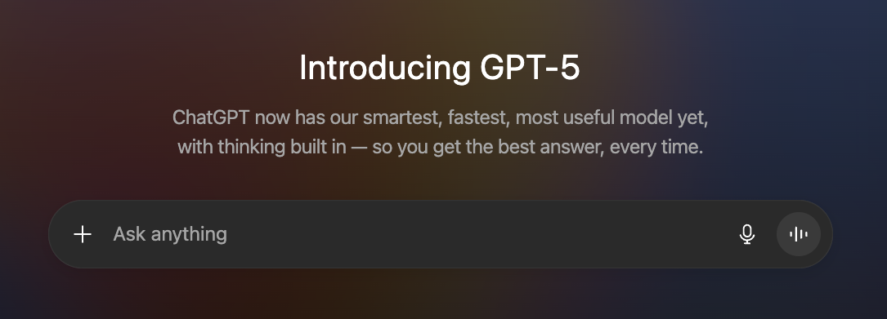

Welcome to my Newsletter, Future Founder.
by Dom Maurice · 2025-08-08Free App Idea of the Week | Screenshit
An app that can take all of the screenshots from a Mac desktop, and uses OCR and AI to categorise and tag all screenshots for future use, whilst also clearing up the desktop.
The Problem
Mac desktops are the default location for screenshots, which can quickly lead to a cluttered and disorganised mess ... which is annoying. As users take more and more screenshots, the desktop becomes a dumping ground of miscellaneous images with generic file names like "Screenshot 2023-10-27 at 10.30.00 AM." Finding a specific screenshot later becomes a frustrating and time-consuming task, forcing users to either manually sort through a disorganised pile of nonsense or give up on retrieving the information altogether, or funnily leads to taking another screenshot.
Hypothesis
By creating an app that automatically processes, tags, and archives screenshots, we can eliminate desktop clutter and make it effortless for users to find any screenshot they've ever taken, saving time and reducing frustration.
Potential Features
Automated Organisation and Tagging: The app would constantly monitor the desktop for new screenshots. Using Optical Character Recognition (OCR), it would read the text within the image and then use AI to understand the context.
Smart Search: With all screenshots properly tagged and indexed, the app would provide a powerful search function. A user could simply type "pasta recipe" or "financial report" and the app would instantly pull up all relevant screenshots.
Desktop Cleanup and Archiving: The app's primary function would be to clear the desktop. As soon as a screenshot is taken and processed, it would be automatically moved from the desktop to a designated, organised folder within the app's archive. This keeps the desktop clean and clutter-free (mmmm nice) while still making the screenshots easily accessible and searchable from within the app itself.
Mockup of Screenshit
Here is an example of what the app could look like (viewable on desktop only). The app would have a clean, minimalist design, focusing on functionality and ease of use. The main screen would display a grid of screenshots, each with a small preview and the associated tags. A search bar at the top would allow users to find specific screenshots quickly. The left sidebar would provide access to different categories or tags, making it easy to browse through archived screenshots.
This Week's Events
Data Engineers London - Data Quality & AI Ethics
- When to use AI is down to what type of output is expected - Deterministic or Probabilistic.
- The era of specialists and generalists is changing with AI, and domain-level knowledge is expanding.
Cloud Native London
- There is a wide adoption of implementation a hybrid vendor and open source solution for observability.
- No longer need to choose between functionality or flexibility in observability.
- Cloud Native helps hugely with maintaining continuous integration and continuous deployment, and the testing required for all stages of the pipeline.
- The worlds of Cloud Native and AI will take the best ideas from each other.
What I am working on
Week 15 of pivoting my business to a coaching service, and things are going well. Videos to shoot and edit, new faces to meet, each interaction enjoyable but also a little draining. The days were filled with a massive outreach effort, all focused on getting more people interested in what I'm building.
With the algo being what it is, I am going to lean on email more over the coming weeks. I've even been considering starting a micro-vlog, documenting the entire process of building a micro-SaaS to give people a real look behind the curtain. And in between all of this, I'm making sure to dedicate time to more sessions with my clients, the people who remind me why this work is so important.
The World of Tech
GPT-5 has been released. It’s better, but not game-changing; however, the hype train keeps going.
After implementing platform and tool enhancements that reduced the need for customer support, Atlassian cut 150 jobs in its customer service and support departments. The job cuts were announced in a prerecorded message from CEO Mike Cannon-Brookes, which was released just hours before co-founder Scott Farquhar gave a speech to the Australian Press Club. In his address, Farquhar called on Australia to embrace an “AI revolution” and move past the “jobs of the past.” Atlassian, an Australian software firm, was founded in 2002.
Scale AI is letting go of about 200 employees, which is roughly 14% of its workforce, and cutting ties with 500 contractors. This decision comes shortly after Meta made a $14.3 billion deal with the data-labelling startup, bringing in Scale AI's CEO to lead a new lab. The layoffs are part of a broader restructuring, with the company's interim CEO citing "inefficiencies and redundancies" that were created by a rapid expansion in its generative AI division.
AI is doing job interviews now, but candidates say they'd rather risk staying unemployed than talk to another robot. Can’t blame them.
How they got to Success (and how you can copy their homework)
Tinder's initial go-to-market strategy was a masterclass in grassroots adoption, focusing on a deep understanding of its target audience's existing habits. Instead of relying on traditional advertising, the company directly engaged with college students by hosting parties and going to campus clubs.
The core of this strategy was a simple yet effective tactic: they would give out free merchandise, including t-shirts, to female students with a message that directly addressed a common social interaction.
These shirts, which read "don't ask for my number, find me on Tinder," cleverly preempted the old method of exchanging contact information and simultaneously advertised the app as the new, cooler alternative.
This hands-on approach built a critical mass of early adopters by meeting people where the "old" problem (meeting new people and exchanging numbers) was already being solved, creating a network effect that quickly drove widespread behavioural change and established Tinder as the dominant force in mobile dating.
Next Week's Events
Django London: Picnic Party!
A chilled one for all the Pythonistas! Looking forward to a relaxed evening in the park.
View Event →Tech Startups in the Pub
Relaxed networking. Always a good one, with amazing people building great products.
View Event →